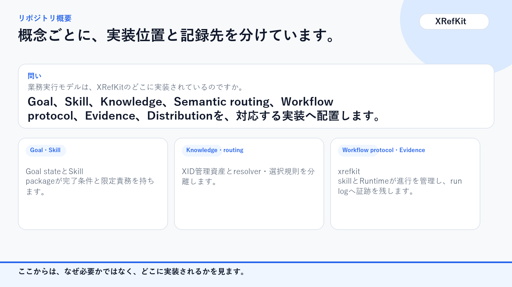
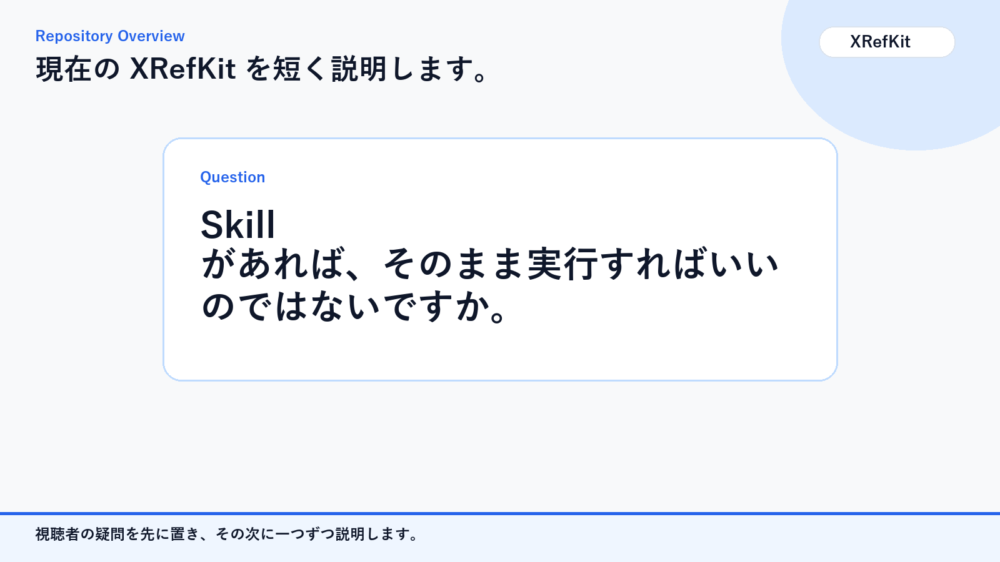
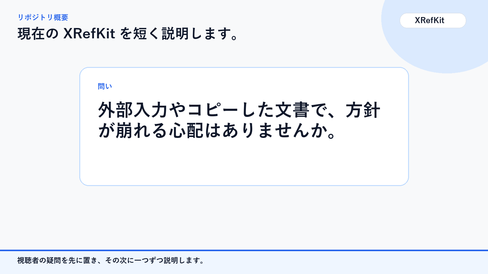
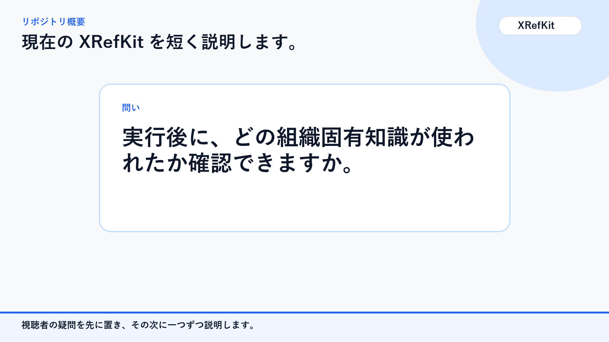
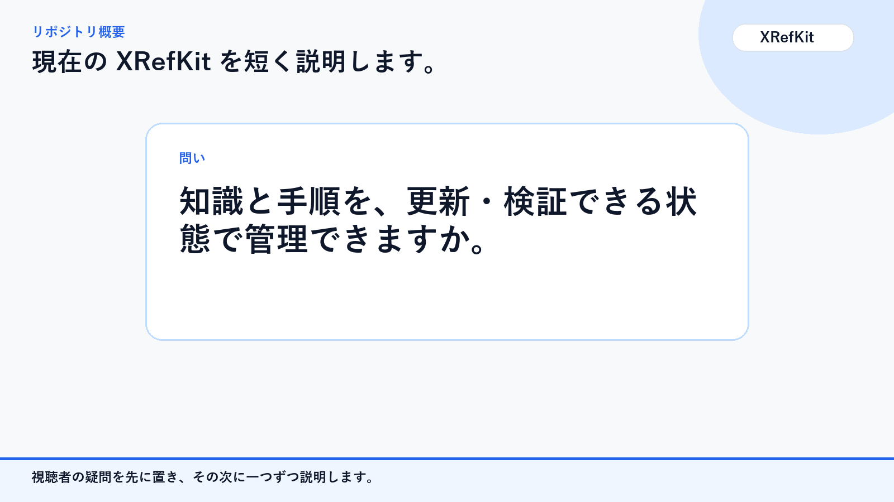

01a
業務実行モデルは、XRefKitのどこに実装されているのですか。

業務実行モデルがXRefKitのどこに実装されているかを、読むもの、従うもの、残すものに分けて説明します。
業務実行モデルは、XRefKitのどこに実装されているのですか。
概念ごとに、実装位置と記録先を分けています。

完了、責務、進行、判断材料、接続は、どの実装構造が担当するのですか。

目標、限定責務、進行、判断材料、接続を別の構造で持ちます。

では、このリポジトリは何をどう分けているのですか。

層を分けて、読むもの、従うもの、残すものを分離しています。

責務 があれば、そのまま実行すればいいのではないですか。

作業進行規約を実行管理枠として実装します。

外部入力やコピーした文書で、方針が崩れる心配はありませんか。

文脈方向保護が上位方針を守ります。

複数 AI や継続作業は、どうやって切れずにつなぐのですか。

実行履歴 と 終了判定 確認で 引継ぎ をつなぎます。
実行後に、どの組織固有知識が使われたか確認できますか。

実行識別子で相関し、XID利用を観測します。
知識と手順を、更新・検証できる状態で管理できますか。

XRefKitは、知識・手順・実行記録の正本を分けて管理します。